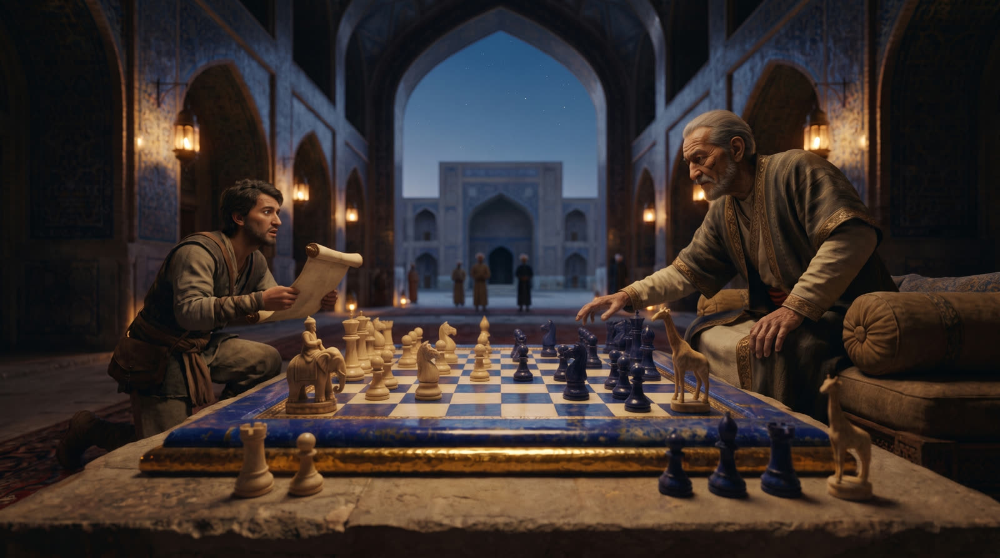

Temur va shaxmat
Saroyida katta shaxmat o‘ynalgan hukmdor va rivoyatga ko‘ra shaxmat yurishi sharafiga nomlangan o‘g‘il.

Temur (1336–1405) Samarqanddan turib Kichik Osiyodan Hindistongacha ulkan davlatni boshqargan. Uni Temur Lang — «Oqsoq Temur» deyishgan — yevropacha Tamerlan shundan. Yurishlarining butun shafqatsizligiga qaramay, u olimlarni qadrlagan, ular bilan suhbat va o‘yinni yoqtirgan.
Manbalar Temurni katta shaxmat bilan bog‘laydi: u kichik taxtadan ko‘ra uni afzal ko‘rgani va saroyga eng yaxshi o‘yinchilarni taklif qilgani aytiladi. O‘yinni o‘zi ixtiro qilgani haqidagi da’vo rivoyat bo‘lib qolmoqda.
Shohruh
Eng mashhur hikoya tarixchi Ibn Arabshoh so‘zlaridan yetib kelgan: Temurga o‘g‘li tug‘ilgani (1377) xabar qilinganda u shaxmat o‘ynayotgan va endigina «shoh-rux» — shoh va ruxga bir vaqtda hujum yurishini qilgan edi. Bolani shunday atashdi: Shohruh. Keyinchalik u o‘zi Temuriylar davlati hukmdori bo‘ldi, o‘g‘li Ulug‘bek esa Samarqandda madrasa va rasadxona qurdi.
Bu hikoyaga go‘zal rivoyat sifatida qarash kerak: partiyaning aniq pozitsiyasini hech kim yozib olmagan, «shoh» va «rux» esa forschada shunchaki «qirol» va «ladya» degani.